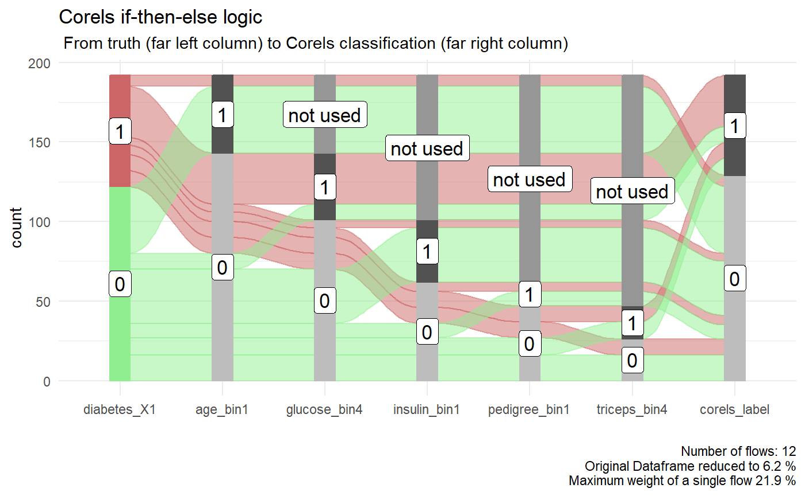

Corels vs Random Forest
2020-08-17
diabetes_example.RmdSummary
The performance of Corels on test data is compared to Rebecca Barter’s tidymodels walkthrough applying a random forest model.
The accuarcy of Corels on test data of 75% is the same as Rebbeca’s random forest example and similar to that achieved by popular Kaggle notebooks. Though Corels has the advantage of readable rules.
Background
Corels are ‘Certifiably Optimal RulE ListS’. They are short and simple human interpretable rule lists created on categorical data.
This analysis compares the performance of a simple Corels rule set to a randome forest on the Pima Indians Diabetes datase.
Pima Indians diabetes data
In this example, we re-use the exact recipes data preparation steps from the excellent tidymodels walkthrough by Rebecca Barter
library(tidymodels) library(corels) library(tidycorels) library(kableExtra) library(easyalluvial) library(parcats) library(networkD3) library(formattable) library(visNetwork) kable_table <- function(table, title) { kableExtra::kable(table, caption = title) %>% kableExtra::kable_styling( latex_options = "hold_position", full_width = F, bootstrap_options = c("striped", "condensed"), position = "left" ) } # load the Pima Indians dataset from the mlbench dataset library(mlbench) data(PimaIndiansDiabetes) diabetes_orig <- PimaIndiansDiabetes diabetes_clean <- diabetes_orig %>% dplyr::mutate_at( vars(triceps, glucose, pressure, insulin, mass), function(.var) { if_else(condition = (.var == 0), # if true (i.e. the entry is 0) true = as.numeric(NA), # replace the value with NA false = .var # otherwise leave it as it is ) } ) kable_table(head(diabetes_clean, 5), title = "Pima Indians Dataset")
| pregnant | glucose | pressure | triceps | insulin | mass | pedigree | age | diabetes |
|---|---|---|---|---|---|---|---|---|
| 6 | 148 | 72 | 35 | NA | 33.6 | 0.627 | 50 | pos |
| 1 | 85 | 66 | 29 | NA | 26.6 | 0.351 | 31 | neg |
| 8 | 183 | 64 | NA | NA | 23.3 | 0.672 | 32 | pos |
| 1 | 89 | 66 | 23 | 94 | 28.1 | 0.167 | 21 | neg |
| 0 | 137 | 40 | 35 | 168 | 43.1 | 2.288 | 33 | pos |
The Pima Indians diabetes data set is split into train and test datasets.
set.seed(234589) diabetes_split <- rsample::initial_split(diabetes_clean,prop = 3 / 4) diabetes_train <- rsample::training(diabetes_split) diabetes_test <- rsample::testing(diabetes_split) diabetes_cv <- vfold_cv(diabetes_train)
Prepare dataframe for Corels
We now apply the same recipe steps as Rebecca, but with additional step to discretise the continuous variables, then each categorsied value is given its own 0/1 binary column using recipes::step_dummy(). This is sometimes called one-hot encoding.
Finally, Corels requires the label column (diabetes) to be split into two columns representing each class. First we ensure the values in the label are 0 and 1 instead of words (using recipes::step_integer()), then use recipes::step_dummy() to create the two label columns.
diabetes_corels_recipe <- recipes::recipe(diabetes ~ pregnant + glucose + pressure + triceps + insulin + mass + pedigree + age, data = diabetes_train) %>% recipes::step_normalize(all_numeric()) %>% recipes::step_knnimpute(all_predictors()) %>% # 1 discretise continous variables into bins recipes::step_discretize(-recipes::all_outcomes(), min_unique = 1) %>% # 2 convert each value of each predictor into its own 0/1 binary column recipes::step_mutate_at(recipes::all_predictors(), fn = list(~ as.factor(.))) %>% recipes::step_dummy(recipes::all_predictors(), one_hot = TRUE) %>% # 3 convert each value of the outcome column into its own 0/1 binary column recipes::step_integer(recipes::all_outcomes(), zero_based = TRUE) %>% # ensure outcome is 0/1 rather than words recipes::step_mutate_at(recipes::all_outcomes(), fn = list(~ as.factor(.))) %>% recipes::step_dummy(recipes::all_outcomes(), one_hot = TRUE) # Train the data recipe on the training data diabetes_trained_rec <- recipes::prep(diabetes_corels_recipe, training = diabetes_train, retain = TRUE) # Extract the train data with recipe applied (juice), and the same recipe applied to the test data (bake) diabetes_train_preprocessed <- recipes::juice(diabetes_trained_rec) diabetes_test_preprocessed <- recipes::bake(diabetes_trained_rec, new_data = diabetes_test) # View the proccessed trained data kable_table(head(diabetes_train_preprocessed, 5), title = "diabetes training data preprocessed")
| pregnant_bin_missing | pregnant_bin1 | pregnant_bin2 | pregnant_bin3 | pregnant_bin4 | glucose_bin_missing | glucose_bin1 | glucose_bin2 | glucose_bin3 | glucose_bin4 | pressure_bin_missing | pressure_bin1 | pressure_bin2 | pressure_bin3 | pressure_bin4 | triceps_bin_missing | triceps_bin1 | triceps_bin2 | triceps_bin3 | triceps_bin4 | insulin_bin_missing | insulin_bin1 | insulin_bin2 | insulin_bin3 | insulin_bin4 | mass_bin_missing | mass_bin1 | mass_bin2 | mass_bin3 | mass_bin4 | pedigree_bin_missing | pedigree_bin1 | pedigree_bin2 | pedigree_bin3 | pedigree_bin4 | age_bin_missing | age_bin1 | age_bin2 | age_bin3 | age_bin4 | diabetes_X0 | diabetes_X1 |
|---|---|---|---|---|---|---|---|---|---|---|---|---|---|---|---|---|---|---|---|---|---|---|---|---|---|---|---|---|---|---|---|---|---|---|---|---|---|---|---|---|---|
| 0 | 0 | 0 | 1 | 0 | 0 | 0 | 0 | 0 | 1 | 0 | 0 | 1 | 0 | 0 | 0 | 0 | 0 | 0 | 1 | 0 | 0 | 0 | 0 | 1 | 0 | 0 | 0 | 1 | 0 | 0 | 0 | 0 | 0 | 1 | 0 | 0 | 0 | 0 | 1 | 0 | 1 |
| 0 | 1 | 0 | 0 | 0 | 0 | 1 | 0 | 0 | 0 | 0 | 0 | 1 | 0 | 0 | 0 | 0 | 0 | 1 | 0 | 0 | 1 | 0 | 0 | 0 | 0 | 1 | 0 | 0 | 0 | 0 | 0 | 1 | 0 | 0 | 0 | 0 | 0 | 1 | 0 | 1 | 0 |
| 0 | 0 | 0 | 0 | 1 | 0 | 0 | 0 | 0 | 1 | 0 | 1 | 0 | 0 | 0 | 0 | 0 | 0 | 1 | 0 | 0 | 0 | 0 | 0 | 1 | 0 | 1 | 0 | 0 | 0 | 0 | 0 | 0 | 0 | 1 | 0 | 0 | 0 | 1 | 0 | 0 | 1 |
| 0 | 1 | 0 | 0 | 0 | 0 | 0 | 0 | 1 | 0 | 0 | 1 | 0 | 0 | 0 | 0 | 0 | 0 | 0 | 1 | 0 | 0 | 0 | 1 | 0 | 0 | 0 | 0 | 0 | 1 | 0 | 0 | 0 | 0 | 1 | 0 | 0 | 0 | 1 | 0 | 0 | 1 |
| 0 | 0 | 0 | 1 | 0 | 0 | 0 | 1 | 0 | 0 | 0 | 0 | 0 | 1 | 0 | 0 | 1 | 0 | 0 | 0 | 0 | 0 | 1 | 0 | 0 | 0 | 1 | 0 | 0 | 0 | 0 | 1 | 0 | 0 | 0 | 0 | 0 | 0 | 1 | 0 | 1 | 0 |
Run tidycorels
We can now run tidycorels::tidy_corels() function on the prepared diabetes training data.
diabetes_train_model <- tidycorels::tidy_corels( df = diabetes_train_preprocessed, label_cols = c("diabetes_X0", "diabetes_X1"), value_delim = "_", run_bfs = TRUE, calculate_size = TRUE, run_curiosity = TRUE, regularization = 0.01, curiosity_policy = 3, map_type = 1 )
Here are the Corels rules for the diabetes data.
diabetes_train_model$corels_console_output[4:10] #> [1] "OPTIMAL RULE LIST" #> [2] "if ({age:bin1}) then ({diabetes:X0})" #> [3] "else if ({glucose:bin4}) then ({diabetes:X1})" #> [4] "else if ({insulin:bin1}) then ({diabetes:X0})" #> [5] "else if ({pedigree:bin1}) then ({diabetes:X0})" #> [6] "else if ({triceps:bin4}) then ({diabetes:X1})" #> [7] "else ({diabetes:X0})"
And we can view the Corels rules as a D3 network sankey diagram of the rules applied to the training data.
networkD3::sankeyNetwork(# edges Links = diabetes_train_model$sankey_edges_df, Value = "value", Source = "source", Target = "target", # nodes Nodes = diabetes_train_model$sankey_nodes_df, NodeID = "label", # format fontSize = 12, nodeWidth = 40, sinksRight = TRUE )
And with some manipualation of the nodes and edges data, the rules can be viewed as a visNetwork visualisation.
rule_count <- base::nrow(diabetes_train_model$rule_performance_df) # extract the rule order (or levels) level <- diabetes_train_model$rule_performance_df %>% dplyr::mutate(level = dplyr::row_number()) %>% dplyr::rename(level_label = rule) %>% dplyr::select(level_label,level) # rename the edges edges <- diabetes_train_model$sankey_edges_df %>% dplyr::rename(from = source, to = target) %>% dplyr::mutate(title = value) # add the levels nodes <- diabetes_train_model$sankey_nodes_df %>% dplyr::rename(id = ID) %>% dplyr::mutate(level_label = stringi::stri_trim_both(stringi::stri_sub(label,1,-4))) %>% dplyr::left_join(level) %>% dplyr::mutate(level = case_when(is.na(level) ~ as.numeric(rule_count),TRUE ~as.numeric(level))) %>% dplyr::rename(title = level_label) visNetwork::visNetwork(nodes, edges, width = "100%") %>% visNetwork::visNodes(size = 12) %>% visNetwork::visEdges(arrows = "to") %>% visNetwork::visHierarchicalLayout(direction = "UD", levelSeparation = 80) %>% visNetwork::visInteraction(navigationButtons = TRUE) %>% visNetwork::visOptions(highlightNearest = list(enabled = T, hover = T), nodesIdSelection = T, collapse = TRUE)
A dataframe of just the true label, the columns used in the Corels rules, and the Corels predictions is also available. The columns have been ordered for you to work well in an alluvial plot.
p <- diabetes_train_model$alluvial_df %>% easyalluvial::alluvial_wide(stratum_width = 0.2, NA_label = "not used", col_vector_flow =c("lightgreen","#CC6666")) + ggplot2::theme_minimal() + ggplot2::labs( title = "Corels if-then-else logic", subtitle = " From truth (far left column) to Corels classification (far right column)" ) p
Performance on test data
Next we use the function tidycorels::corels_predict() to apply the Corels rules created on the training data to the test data.
diabetes_test_predict <- tidycorels::predict_corels( model = diabetes_train_model, new_df = diabetes_test_preprocessed )
We can now use the test data that has been labelled using the Corels rules to compare to the true labe with a confusion matrix and performance statistics.
conf_matrix <- diabetes_test_predict$new_df_labelled %>% yardstick::conf_mat( truth = "diabetes_X1", estimate = "corels_label" ) ggplot2::autoplot(conf_matrix, "heatmap")

summary(conf_matrix, event_level = "second") %>% dplyr:::mutate(.estimate = round(.estimate, digits = 3)) %>% dplyr::select(.metric, .estimate) %>% dplyr::filter(.metric %in% c("accuracy","bal_accuracy","precision", "recall", "f_meas")) %>% dplyr::mutate(.estimate = formattable::color_tile("white", "orange")(.estimate)) %>% kableExtra::kable(escape = F, caption = "Corels Test data Performance") %>% kableExtra::kable_styling("hover", full_width = F)
| .metric | .estimate |
|---|---|
| accuracy | 0.745 |
| bal_accuracy | 0.714 |
| precision | 0.667 |
| recall | 0.600 |
| f_meas | 0.632 |
The accuracy achieved by Corels on the unseen test data is . This is the same accuracy the random forest reached in Rebbeca’s example. In contrast, Corels rules are easy to read and visualise with an alluvial plot. For example, below if we follow the thickest red path through the Corels rules where diabetes was correctly labelled. We can see they are:
- in older age groups (age_bin1 = 0)
- have the highest blood glucose concentraion (glucose_bin4 = 1),
p <- diabetes_test_predict$alluvial_df %>% easyalluvial::alluvial_wide(stratum_width = 0.2, NA_label = "not used", col_vector_flow =c("lightgreen","#CC6666")) + ggplot2::theme_minimal() + ggplot2::labs( title = "Corels if-then-else logic", subtitle = " From truth (far left column) to Corels classification (far right column)" ) p

We can also create an interactive version of the alluvial plot.
parcats::parcats(p = p, data_input = diabetes_test_predict$alluvial_df, marginal_histograms = FALSE, hoveron = 'dimension', hoverinfo = 'count', labelfont = list(size = 11) )
A data frame of the performance of each rule is also provided. This shows us that one of the weaker rules is triceps_bin4.
diabetes_test_predict$rule_performance_df %>% dplyr::mutate(rule_perc_correct = round(rule_perc_correct,1)) %>% dplyr::mutate(rule_perc_correct = formattable::color_tile("white", "orange")(rule_perc_correct)) %>% dplyr::mutate(rule_fire_count = formattable::color_tile("white", "lightblue")(rule_fire_count)) %>% kableExtra::kable(escape = F, caption = "Corels Performance for each rule in order") %>% kableExtra::kable_styling("hover", full_width = F)
| rule | rule_fire_count | rule_correct | rule_perc_correct |
|---|---|---|---|
| age_bin1 | 49 | 42 | 85.7 |
| glucose_bin4 | 42 | 32 | 76.2 |
| insulin_bin1 | 39 | 34 | 87.2 |
| pedigree_bin1 | 15 | 9 | 60.0 |
| triceps_bin4 | 21 | 10 | 47.6 |
| else | 26 | 16 | 61.5 |
If we examine rule success on the training data the weaker triceps_bin4 does perform well in the training data. However, we usually cannot use test data to improve a classifier without risking overfitting (though one option would be to use all of the data to build Corels rules with cross validation).
diabetes_train_model$rule_performance_df %>% dplyr::mutate(rule_perc_correct = round(rule_perc_correct,1)) %>% dplyr::mutate(rule_perc_correct = formattable::color_tile("white", "orange")(rule_perc_correct)) %>% dplyr::mutate(rule_fire_count = formattable::color_tile("white", "lightblue")(rule_fire_count)) %>% kableExtra::kable(escape = F, caption = "Corels Performance for each rule in order") %>% kableExtra::kable_styling("hover", full_width = F)
| rule | rule_fire_count | rule_correct | rule_perc_correct |
|---|---|---|---|
| age_bin1 | 170 | 146 | 85.9 |
| glucose_bin4 | 122 | 88 | 72.1 |
| insulin_bin1 | 71 | 64 | 90.1 |
| pedigree_bin1 | 62 | 47 | 75.8 |
| triceps_bin4 | 38 | 29 | 76.3 |
| else | 113 | 78 | 69.0 |
Further, below we visualise the distribution of the raw values of each categorised bin used in each rule.
diabetes_recipe_non_dummy <- recipes::recipe(diabetes ~ pregnant + glucose + pressure + triceps + insulin + mass + pedigree + age, data = diabetes_clean) %>% recipes::step_normalize(all_numeric()) %>% recipes::step_knnimpute(all_predictors()) %>% # discretise numeric variables into bins recipes::step_discretize(-recipes::all_outcomes(), min_unique = 1) %>% recipes::step_mutate_at(recipes::all_predictors(), fn = list(~ as.factor(.))) %>% recipes::step_mutate_at(recipes::all_outcomes(), fn = list(~ as.factor(.))) diabetes_train_preprocessed <- diabetes_recipe_non_dummy %>% recipes::prep(diabetes_train) %>% recipes::juice() combined <- diabetes_train_preprocessed %>% dplyr::rename_with(toupper) %>% dplyr::bind_cols(diabetes_train) plot_fun <- function(X, Y, bin) { X <- rlang::ensym(X) Y <- rlang::ensym(Y) bin <- rlang::ensym(bin) combined %>% ggplot2::ggplot(aes( x = !!X, y = !!Y )) + ggplot2::geom_violin(scale = "count") + gghighlight::gghighlight(!!X == bin) + ggplot2::theme_minimal() } p1 <- plot_fun(X = AGE, Y = age, bin = bin1) p2 <- plot_fun(X = GLUCOSE, Y = glucose, bin = bin4) p3 <- plot_fun(X = INSULIN, Y = insulin, bin = bin1) p4 <- plot_fun(X = PEDIGREE, Y = pedigree, bin = bin1) p5 <- plot_fun(X = TRICEPS, Y = triceps, bin = bin4) cowplot::plot_grid(p1, p2, p3, p4, p5)
The plots from left to right highlight which bin is used in each Corels rule in the sequential order of the rules. The plot is created by combining the discretised and one-hot encoded data with the raw column values.